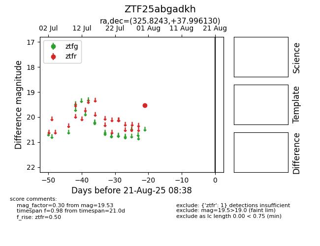

Target ZTF25abgadkh at 2025-08-21 08:38, see:
FINK: fink-portal.org/ZTF25abgadkh
Lasair: lasair-ztf.lsst.ac.uk/objects/ZTF25abgadkh
ALeRCE: alerce.online/object/ZTF25abgadkh
alt names
ZTF25abgadkh (ztf,alerce)
coordinates:
equatorial (ra, dec) = (325.8243,+37.99613)
galactic (l, b) = (86.8998,-11.37921)
photometry
last ztfr=19.53
1 ztfr detections
